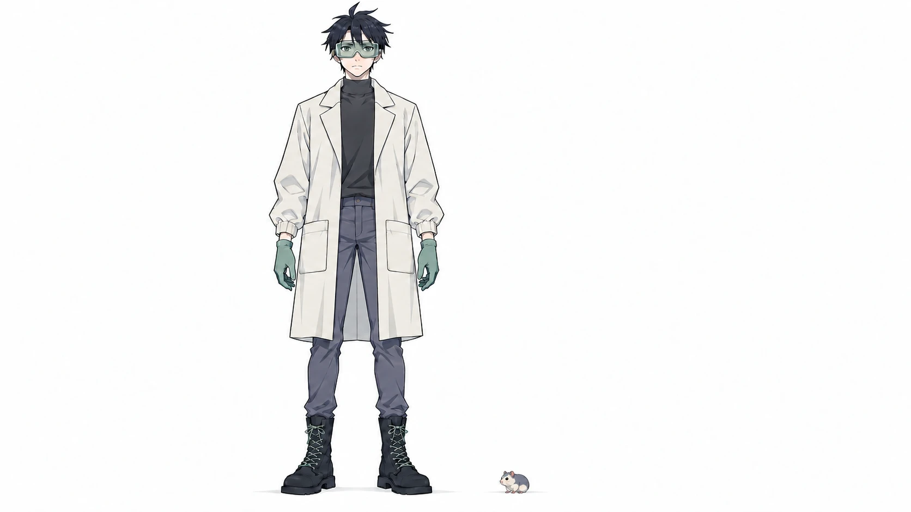
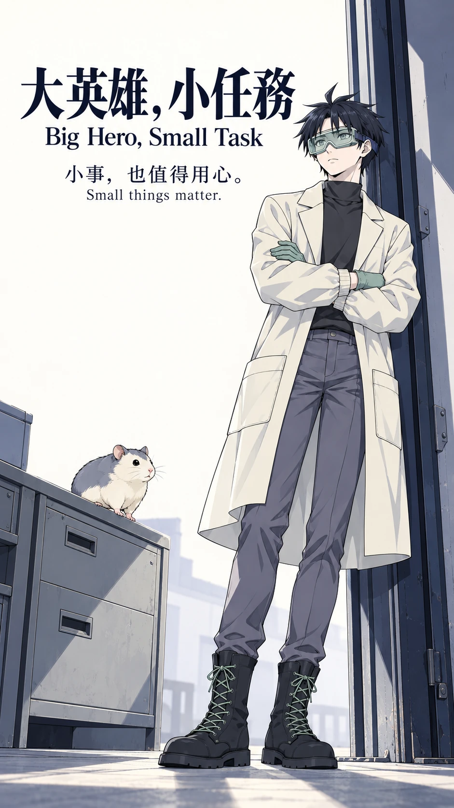
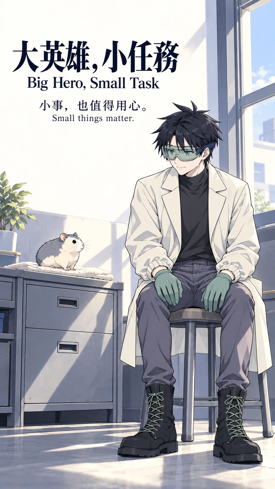

更新日期：2026-11-01
狀態：已確認方案；雙語文字、15 張圖像、字幕與本地圖像總覽已完成並核對。實際影片與音訊尚未生成。
風格：S15｜冷色怪誕透視漫畫。英文描述：Cool-Toned Offbeat Perspective Manga。
全片 60 秒＝片頭 5 秒＋正片 10 鏡各 5 秒＋片尾 5 秒。
圖像總覽｜分鏡圖像提示詞｜12 段影片提示詞｜資產清單｜核對報告
正式分鏡補充：把掉落一顆葵花籽拍成英雄任務；大工具因尺寸不合而派不上用場，最後以窄小的L形硬紙片輕撥救回。笑點來自架勢與任務大小的反差，並以「小事，也值得用心」收束。工具不接觸動物。
| 項目 | 中文 | English |
|---|---|---|
| 大標題 | 大英雄，小任務 | Big Hero, Small Task |
| 副標題 | 小事，也值得用心。 | Small things matter. |
中英文已逐句核對語法與情緒，採自然詩意對應。中文字幕每鏡 6 字，英文每鏡 2–5 個單字。字幕以後製軌交付，十鏡原圖不寫入文字。
片頭為工作前門邊倚姿與無籽倉鼠；片尾為收工後窗邊坐姿、倉鼠在旁休息，與正片首尾機位和動作不同。
護目鏡始終在雙眼前、透明鏡片可見灰綠眼。03只微調側框，10右手輕擦額角，不把護目鏡抬到額頭，也不憑空多一副。
| 段落 | 全片時間 | 時長 |
|---|---|---|
| 片頭 | 00:00–00:05 | 5 秒 |
| 十鏡正片 | 00:05–00:55 | 50 秒 |
| 片尾 | 00:55–01:00 | 5 秒 |
| 鏡號／類型 | 小標題／English | 全片時間 | 中文字幕 | English Caption | 長度 |
|---|---|---|---|---|---|
| 01 桌面近景 / Table-level close-up | 一籽失足 / One Seed Slips | 5–10 秒 | 一顆小小心願 | One tiny wish. | 5 秒 |
| 02 極近特寫 / Extreme close-up | 縫中微光 / A Tiny Setback | 10–15 秒 | 小小也有重量 | Small carries weight. | 5 秒 |
| 03 人物近景 / Character close-up | 英雄就位 / Hero Mode | 15–20 秒 | 這次交給我吧 | Leave it to me. | 5 秒 |
| 04 低角度廣角中景 / Low-angle wide medium shot | 巨鉗登場 / The Grand Tool | 20–25 秒 | 氣勢高過山巔 | Grand as mountains. | 5 秒 |
| 05 工具局部特寫 / Tool detail close-up | 大材小縫 / Too Big to Fit | 25–30 秒 | 原來力有未逮 | Too big to fit. | 5 秒 |
| 06 反應近景 / Reaction close-up | 英雄一愣 / A Quiet Pause | 30–35 秒 | 先讓架勢歇歇 | Let grandeur rest. | 5 秒 |
| 07 手部特寫 / Hand detail close-up | 紙片上場 / A Simpler Tool | 35–40 秒 | 換個輕巧辦法 | Try something simple. | 5 秒 |
| 08 桌緣微距 / Table-edge macro shot | 輕撥出縫 / A Gentle Nudge | 40–45 秒 | 輕輕也能做到 | Gentle works too. | 5 秒 |
| 09 動物近景 / Animal close-up | 失而復得 / Safe Again | 45–50 秒 | 心願終於回家 | A wish comes home. | 5 秒 |
| 10 斜側中景 / Oblique medium shot | 小勝如山 / A Small Triumph | 50–55 秒 | 小事值得用心 | Small things matter. | 5 秒 |
類型：桌面近景 / Table-level close-up；全片 5–10 秒，共 5 秒。
中文
桌面斜向近景，倉鼠停在後左，唯一一顆葵花籽傾在直縫邊，尚未掉入。低機位把小事拍成大事件，沒有工具或人手。
English
A low diagonal tabletop view finds Bean at rear-left and one sunflower seed poised on the seam's lip. The small mishap gets a grand entrance; no tool or human hand appears.
字幕：一顆小小心願 / One tiny wish.
聲音建議：短促輕滑聲，一個小木琴音。
中文
用途：敘事插畫。單張9:16直式分鏡，無字幕、文字、標誌或浮水印。S15｜冷色怪誕透視漫畫。奶白、冷灰藍紫與薄荷綠陰影；俐落粗細墨線、硬邊賽璐璐上色、尖銳剪影、大表情和廣角斜線透視。誇張集中於前景工具和機位，手與倉鼠保持自然比例。不加漫畫動態弧線、速度線或滿版文字。豆豆，約8公分頭身長的侏儒倉鼠，圓短身形、奶白腹胸與臉頰；頭頂經背部到臀部是一整塊冷灰藍色毛區，兩側分界平滑，沒有第二背條紋或斑點。小圓耳帶粉灰內側、黑亮圓眼、粉色小鼻。四隻短小淡粉足、五趾前足與五趾後足以微小自然趾群呈現；一條不超過5毫米的短尾。非老鼠長尾，不戴衣服。站立吃籽時兩後足承重、兩前足抱同一顆葵花籽。場景與構圖：桌面斜向近景，倉鼠停在後左，唯一一顆葵花籽傾在直縫邊，尚未掉入。低機位把小事拍成大事件，沒有工具或人手。 同一冷藍灰工作桌、奶白背景，硬邊薄荷／灰紫陰影。種子若出現，只能是同一顆黑灰殼三條淡米縱紋葵花籽；桌縫若出現，是單一道窄淺槽、槽底可見，不是深洞。遵循角色表與相鄰鏡頭道具狀態；只畫指定可見角色，無多餘肢體、穿插、倒影、速度線、晃動弧線。 鏡頭接近桌面、前景種子在縫口傾斜，尚未落下；倉鼠四足在後左平面，前足空。桌縫約8毫米寬、6毫米深；種子長約12毫米、寬6毫米，近景透視可放大前景，不能畫成多顆。
English
Use case: illustration-story. ONE portrait9:16 storyboard, NO text/captions/logos/watermark. S15 cool-toned offbeat perspective manga: cream white, cool gray-blue/lavender, mint shadows; crisp varied black ink contours, hard-edged cel shading, angular silhouettes, theatrical expressions, wide-angle diagonal composition. Exaggeration in foreground tools/camera, not extra-large malformed fingers or giant animals. Clean2D anime/manga, no photorealism,3D, painterly blur, motion arcs/speed lines or decorative lettering. Bean, DWARF HAMSTER,8cm nose-to-rump, round compact body, cream face cheeks/chest/belly, ONE continuous cool gray-blue CAPE fur area from crown over back to rump with smooth side boundaries, NO second dorsal stripe or spots. Small round ears pink-gray inside, shiny round black eyes, tiny pink nose, FOUR short pale-pink paws, tiny natural toe groups (five front/hind digits, do not enlarge into human hands). ONE stub tail under5mm, never long mouse tail, no clothes. Feeding pose: two rear paws support body, two forepaws hold ONE sunflower seed. Current scene ONLY: Table-level close-up, diagonal cool blue-gray tabletop recedes steeply. ONE narrow shallow straight recessed seam runs bottom-center toward rear-center. ONE12x6mm striped sunflower seed tilted at seam lip in near foreground, about to slip, NOT already held by hamster. ONE tiny8cm hamster at rear-left3cm back from seam, all4paws safely on flat tabletop, body around6x seed length at equal depth, no clothing. Cream workshop background and sparse pegboard blurred. No human hands/face/tools. No other seeds, shell piles, deep hole or sparks. References lock identity, NOT reference pose/props. Show only listed visible subjects, no duplicate seeds/limbs/digits, physical intersections, reflections or motion marks.
中文
以shot_01.png為起始幀，9:16，5秒。固定低機位；種子輕轉為沿槽方向，再滑進同一淺槽，倉鼠微低頭，不跳入縫中。 保持此鏡可見角色、服裝、道具數量、比例與冷色賽璐璐風格，不讓畫外角色進場，不加文字、晃動弧線、殘影或鏡頭切換。
English
Use shot_01.png as starting frame.9:16,5 seconds. Locked low view. Seed turns gently to align lengthwise and slips into SAME shallow seam; hamster only lowers head slightly, all paws stay on flat top. No second seed or falling animal. Lock only visible identities, clothing, prop count/scale and cool cel-manga style. Off-screen subjects stay off-screen. No text, arcs, trails, extra limbs or cuts.
類型：極近特寫 / Extreme close-up；全片 10–15 秒，共 5 秒。
中文
特寫同一顆種子躺在桌面淺槽中，兩側桌板與槽底清楚可見。槽只是窄，不是深淵；倉鼠和人手保持畫外。
English
The same seed rests in the shallow seam, with both tabletop edges and the channel floor visible. It is narrow rather than bottomless; hamster and hands remain off-screen.
字幕：小小也有重量 / Small carries weight.
聲音建議：音樂短暫留白，再接低音鼓點。
中文
用途：敘事插畫。單張9:16直式分鏡，無字幕、文字、標誌或浮水印。S15｜冷色怪誕透視漫畫。奶白、冷灰藍紫與薄荷綠陰影；俐落粗細墨線、硬邊賽璐璐上色、尖銳剪影、大表情和廣角斜線透視。誇張集中於前景工具和機位，手與倉鼠保持自然比例。不加漫畫動態弧線、速度線或滿版文字。場景與構圖：特寫同一顆種子躺在桌面淺槽中，兩側桌板與槽底清楚可見。槽只是窄，不是深淵；倉鼠和人手保持畫外。 同一冷藍灰工作桌、奶白背景，硬邊薄荷／灰紫陰影。種子若出現，只能是同一顆黑灰殼三條淡米縱紋葵花籽；桌縫若出現，是單一道窄淺槽、槽底可見，不是深洞。遵循角色表與相鄰鏡頭道具狀態；只畫指定可見角色，無多餘肢體、穿插、倒影、速度線、晃動弧線。 只有一顆種子順著窄槽長向躺在可見槽底，種子寬度略小於槽寬，兩側桌板與淺槽側壁清楚；沒有倉鼠、人手或工具入鏡。
English
Use case: illustration-story. ONE portrait9:16 storyboard, NO text/captions/logos/watermark. S15 cool-toned offbeat perspective manga: cream white, cool gray-blue/lavender, mint shadows; crisp varied black ink contours, hard-edged cel shading, angular silhouettes, theatrical expressions, wide-angle diagonal composition. Exaggeration in foreground tools/camera, not extra-large malformed fingers or giant animals. Clean2D anime/manga, no photorealism,3D, painterly blur, motion arcs/speed lines or decorative lettering. Current scene ONLY: Extreme macro of ONLY ONE striped sunflower seed lying lengthwise at visible bottom of ONE narrow shallow recessed straight seam between TWO adjacent blue-gray tabletop panels. Seam8mm wide,6mm deep, seed12x6mm so it nearly spans seam width; clearly shallow sidewalls and supported floor, not levitating in black abyss. Seam opens at front tabletop edge. Slanted camera makes long diagonal geometry. No hamster, human hands, tool or second seed, no arrows/marks. References lock identity, NOT reference pose/props. Show only listed visible subjects, no duplicate seeds/limbs/digits, physical intersections, reflections or motion marks.
中文
以shot_02.png為起始幀，9:16，5秒。極慢推近約2%，種子保持靜止；不加發光或晃動符號。 保持此鏡可見角色、服裝、道具數量、比例與冷色賽璐璐風格，不讓畫外角色進場，不加文字、晃動弧線、殘影或鏡頭切換。
English
Use shot_02.png as starting frame.9:16,5 seconds. Very slow2% push-in. Seed stays still and supported. No glow, falling deeper, movement symbols or new objects. Lock only visible identities, clothing, prop count/scale and cool cel-manga style. Off-screen subjects stay off-screen. No text, arcs, trails, extra limbs or cuts.
類型：人物近景 / Character close-up；全片 15–20 秒，共 5 秒。
中文
青年鄭重看向桌面，左手輕靠護目鏡側框。護目鏡本來就在雙眼上，只微調貼合；右手與倉鼠在畫外。
English
Cen studies the table solemnly, left hand touching the goggles' side frame. They are already over his eyes; he only adjusts the fit. Right hand and hamster stay off-screen.
字幕：這次交給我吧 / Leave it to me.
聲音建議：護目鏡輕碰聲，誇張但溫和的英雄鼓點。
中文
用途：敘事插畫。單張9:16直式分鏡，無字幕、文字、標誌或浮水印。S15｜冷色怪誕透視漫畫。奶白、冷灰藍紫與薄荷綠陰影；俐落粗細墨線、硬邊賽璐璐上色、尖銳剪影、大表情和廣角斜線透視。誇張集中於前景工具和機位，手與倉鼠保持自然比例。不加漫畫動態弧線、速度線或滿版文字。岑，24歲青年修理師，178公分、瘦長七點五頭身，冷白膚色、灰綠眼、五簇主要尖峰的短墨藍黑髮。唯一一副薄荷灰方框雙鏡護目鏡，透明淺青鏡片，深藍頭帶，始終戴在雙眼上、可看見眼睛。奶白及膝開襟工作外套、寬折領、袖口固定收束；左右下前片各一個大方貼袋，背面無袋。深炭高領上衣、灰紫窄版工作褲、黑色中筒工作靴與細薄荷色鞋帶。兩手始終戴薄荷綠五指工作手套。無面罩、聽診器、傷疤、縫皮、飾品、帽子或工具腰帶。場景與構圖：青年鄭重看向桌面，左手輕靠護目鏡側框。護目鏡本來就在雙眼上，只微調貼合；右手與倉鼠在畫外。 同一冷藍灰工作桌、奶白背景，硬邊薄荷／灰紫陰影。種子若出現，只能是同一顆黑灰殼三條淡米縱紋葵花籽；桌縫若出現，是單一道窄淺槽、槽底可見，不是深洞。遵循角色表與相鄰鏡頭道具狀態；只畫指定可見角色，無多餘肢體、穿插、倒影、速度線、晃動弧線。 低角度胸上近景，左手在畫面右側輕靠護目鏡側框，拇指與食指整理，其餘三指自然彎曲；右手在畫外。護目鏡不移至額頭，鏡片透明可見雙眼。
English
Use case: illustration-story. ONE portrait9:16 storyboard, NO text/captions/logos/watermark. S15 cool-toned offbeat perspective manga: cream white, cool gray-blue/lavender, mint shadows; crisp varied black ink contours, hard-edged cel shading, angular silhouettes, theatrical expressions, wide-angle diagonal composition. Exaggeration in foreground tools/camera, not extra-large malformed fingers or giant animals. Clean2D anime/manga, no photorealism,3D, painterly blur, motion arcs/speed lines or decorative lettering. Cen,24-year-old male repairer,178cm, lanky7.5-head build, cool pale skin, gray-green eyes, short ink-navy black hair with FIVE main pointed tufts. ONE pair of mint-gray squared twin-lens safety goggles always worn OVER EYES, transparent pale-cyan lenses showing eyes, navy strap. Cream knee-length OPEN work coat, broad notched lapels, gathered fixed cuffs, TWO large square lower-front patch pockets left/right, plain pocket-free back. Dark charcoal high-neck shirt, slim gray-violet work trousers, black mid-calf work boots with thin mint laces. BOTH hands always in mint FIVE-FINGER work gloves. No mask, stethoscope, skin stitches/scars, jewelry, hat or tool belt. Current scene ONLY: Dramatic slightly low-angle face/shoulders portrait of SAME Cen, goggles already OVER EYES, clear mint-gray twin lenses show gray-green eyes. Determined over-serious brow and small confident smile, short ink-navy pointed hair, cream lapel/dark highneck. ONLY ONE LEFT mint-gloved hand gently touches his LEFT goggle temple (viewer-right), natural five digits with one fingertip on frame, no enlarged hand blocking face. Right hand below crop. No hamster, seed, grabber or paper in portrait. Cream/cool lavender workshop geometry behind. References lock identity, NOT reference pose/props. Show only listed visible subjects, no duplicate seeds/limbs/digits, physical intersections, reflections or motion marks.
中文
以shot_03.png為起始幀，9:16，5秒。固定近景；左手只微調鏡框一次，隨後低下少許，眼神認真。 保持此鏡可見角色、服裝、道具數量、比例與冷色賽璐璐風格，不讓畫外角色進場，不加文字、晃動弧線、殘影或鏡頭切換。
English
Use shot_03.png as starting frame.9:16,5 seconds. Locked portrait. LEFT hand adjusts side frame ONCE then lowers slightly. Goggles stay over eyes, no duplicate pair, right hand/animal remain off-screen. Lock only visible identities, clothing, prop count/scale and cool cel-manga style. Off-screen subjects stay off-screen. No text, arcs, trails, extra limbs or cuts.
類型：低角度廣角中景 / Low-angle wide medium shot；全片 20–25 秒，共 5 秒。
中文
青年推出龐大的長柄雙爪夾，右手握柄，左手扶腰。夾頭因透視佔滿前景，兩個鈍圓爪清楚分開；倉鼠和種子不入鏡。
English
Cen presents an oversized long-handled grabber, right hand at the handle and left hand on his hip. Two blunt jaws loom in perspective; hamster and seed stay off-screen.
字幕：氣勢高過山巔 / Grand as mountains.
聲音建議：工具滑動聲與短促英雄和弦。
中文
用途：敘事插畫。單張9:16直式分鏡，無字幕、文字、標誌或浮水印。S15｜冷色怪誕透視漫畫。奶白、冷灰藍紫與薄荷綠陰影；俐落粗細墨線、硬邊賽璐璐上色、尖銳剪影、大表情和廣角斜線透視。誇張集中於前景工具和機位，手與倉鼠保持自然比例。不加漫畫動態弧線、速度線或滿版文字。岑，24歲青年修理師，178公分、瘦長七點五頭身，冷白膚色、灰綠眼、五簇主要尖峰的短墨藍黑髮。唯一一副薄荷灰方框雙鏡護目鏡，透明淺青鏡片，深藍頭帶，始終戴在雙眼上、可看見眼睛。奶白及膝開襟工作外套、寬折領、袖口固定收束；左右下前片各一個大方貼袋，背面無袋。深炭高領上衣、灰紫窄版工作褲、黑色中筒工作靴與細薄荷色鞋帶。兩手始終戴薄荷綠五指工作手套。無面罩、聽診器、傷疤、縫皮、飾品、帽子或工具腰帶。場景與構圖：青年推出龐大的長柄雙爪夾，右手握柄，左手扶腰。夾頭因透視佔滿前景，兩個鈍圓爪清楚分開；倉鼠和種子不入鏡。 同一冷藍灰工作桌、奶白背景，硬邊薄荷／灰紫陰影。種子若出現，只能是同一顆黑灰殼三條淡米縱紋葵花籽；桌縫若出現，是單一道窄淺槽、槽底可見，不是深洞。夾具只有單一直桿、薄荷握柄與兩個鈍圓爪，透視只放大道具。遵循角色表與相鄰鏡頭道具狀態；只畫指定可見角色，無多餘肢體、穿插、倒影、速度線、晃動弧線。 只有一支夾具：兩個光滑C形鈍圓爪、一個關節、一根約60公分直桿與薄荷握柄；夾頭實際約10公分寬，因透視佔滿前景。右手在身前握柄，左手扶腰。工具在空桌前展示，爪尖可先輕靠桌面再稍抬，不接觸動物。
English
Use case: illustration-story. ONE portrait9:16 storyboard, NO text/captions/logos/watermark. S15 cool-toned offbeat perspective manga: cream white, cool gray-blue/lavender, mint shadows; crisp varied black ink contours, hard-edged cel shading, angular silhouettes, theatrical expressions, wide-angle diagonal composition. Exaggeration in foreground tools/camera, not extra-large malformed fingers or giant animals. Clean2D anime/manga, no photorealism,3D, painterly blur, motion arcs/speed lines or decorative lettering. Cen,24-year-old male repairer,178cm, lanky7.5-head build, cool pale skin, gray-green eyes, short ink-navy black hair with FIVE main pointed tufts. ONE pair of mint-gray squared twin-lens safety goggles always worn OVER EYES, transparent pale-cyan lenses showing eyes, navy strap. Cream knee-length OPEN work coat, broad notched lapels, gathered fixed cuffs, TWO large square lower-front patch pockets left/right, plain pocket-free back. Dark charcoal high-neck shirt, slim gray-violet work trousers, black mid-calf work boots with thin mint laces. BOTH hands always in mint FIVE-FINGER work gloves. No mask, stethoscope, skin stitches/scars, jewelry, hat or tool belt. Current scene ONLY: Heroic low-angle wide medium shot, sharp diagonal workshop. SAME Cen behind ONE long straight-shaft mechanical grabber aimed toward camera, his RIGHT mint-gloved hand grips SINGLE mint handle near his own torso, LEFT hand rests on own hip. Foreground blue-gray grabber HEAD huge by foreshortening, exactly TWO blunt rounded jaws opening a little, no spikes/teeth/blade; SINGLE straight metal shaft connects head to handle. Real jawwidth10cm but dominates foreground perspective; tool displayed safely near EMPTY tabletop, a blunt tip may lightly rest before a small lift, NOT at animal. Goggles over eyes, theatrical confident grin (normal teeth). No hamster, seed or paper visible. No attack graphics/speed lines. References lock identity, NOT reference pose/props. Show only listed visible subjects, no duplicate seeds/limbs/digits, physical intersections, reflections or motion marks.
中文
以shot_04.png為起始幀，9:16，5秒。低機位固定；夾具只緩抬離空桌面少許後停住，不開合、不靠近動物。 保持此鏡可見角色、服裝、道具數量、比例與冷色賽璐璐風格，不讓畫外角色進場，不加文字、晃動弧線、殘影或鏡頭切換。
English
Use shot_04.png as starting frame.9:16,5 seconds. Locked low camera. Grabber lifts a short distance away from empty tabletop then stops, jaws stay same opening. Hands remain at handle/hip, no rotating camera, attack or extra jaws. Lock only visible identities, clothing, prop count/scale and cool cel-manga style. Off-screen subjects stay off-screen. No text, arcs, trails, extra limbs or cuts.
類型：工具局部特寫 / Tool detail close-up；全片 25–30 秒，共 5 秒。
中文
雙爪夾停在窄槽上方，夾頭遠比槽寬，槽底種子依然可見。工具不插入、不夾合；比例反差就是笑點。
English
The grabber stops above the narrow seam, far too broad to enter. The seed remains visible below; neither insertion nor clamping occurs. The mismatch supplies the joke.
字幕：原來力有未逮 / Too big to fit.
聲音建議：英雄和弦戛然而止，一聲輕巧鈍音。
中文
用途：敘事插畫。單張9:16直式分鏡，無字幕、文字、標誌或浮水印。S15｜冷色怪誕透視漫畫。奶白、冷灰藍紫與薄荷綠陰影；俐落粗細墨線、硬邊賽璐璐上色、尖銳剪影、大表情和廣角斜線透視。誇張集中於前景工具和機位，手與倉鼠保持自然比例。不加漫畫動態弧線、速度線或滿版文字。場景與構圖：雙爪夾停在窄槽上方，夾頭遠比槽寬，槽底種子依然可見。工具不插入、不夾合；比例反差就是笑點。 同一冷藍灰工作桌、奶白背景，硬邊薄荷／灰紫陰影。種子若出現，只能是同一顆黑灰殼三條淡米縱紋葵花籽；桌縫若出現，是單一道窄淺槽、槽底可見，不是深洞。遵循角色表與相鄰鏡頭道具狀態；只畫指定可見角色，無多餘肢體、穿插、倒影、速度線、晃動弧線。 斜俯視工具特寫，兩爪停在槽的兩側上方約2公分，爪體比8毫米槽寬得多；單一直桿出畫。唯一種子仍在槽底、沒有被夾；不畫人手、倉鼠或紙片。
English
Use case: illustration-story. ONE portrait9:16 storyboard, NO text/captions/logos/watermark. S15 cool-toned offbeat perspective manga: cream white, cool gray-blue/lavender, mint shadows; crisp varied black ink contours, hard-edged cel shading, angular silhouettes, theatrical expressions, wide-angle diagonal composition. Exaggeration in foreground tools/camera, not extra-large malformed fingers or giant animals. Clean2D anime/manga, no photorealism,3D, painterly blur, motion arcs/speed lines or decorative lettering. Current scene ONLY: Tight high oblique detail ONLY TWO blunt rounded blue-gray grabber jaws hovering2cm ABOVE SAME narrow shallow tabletop seam, never inserted or gripping. Both jaw solids are several times wider than8mm seam; tiny SAME striped seed12x6mm visible supported on channel bottom beneath/just beyond jaws. ONE tool shaft exits upper frame. Two solid tabletop panels, shallow floor clear. No human hands/face, hamster or paper. Maintain EXACT grabber jaw design from prior frame. No crushed seed, tool bending, sparks or graphic symbols. References lock identity, NOT reference pose/props. Show only listed visible subjects, no duplicate seeds/limbs/digits, physical intersections, reflections or motion marks.
中文
以shot_05.png為起始幀，9:16，5秒。固定特寫，工具再下降極少距離便停住，兩爪始終在槽上方，不強行塞入。 保持此鏡可見角色、服裝、道具數量、比例與冷色賽璐璐風格，不讓畫外角色進場，不加文字、晃動弧線、殘影或鏡頭切換。
English
Use shot_05.png as starting frame.9:16,5 seconds. Locked detail. Jaws lower only a few millimeters then stop ABOVE seam; no insertion, clamp, seed movement, breakage or new object. Lock only visible identities, clothing, prop count/scale and cool cel-manga style. Off-screen subjects stay off-screen. No text, arcs, trails, extra limbs or cuts.
類型：反應近景 / Reaction close-up；全片 30–35 秒，共 5 秒。
中文
青年稍愣後歪頭，認真表情露出一點尷尬。雙手在畫外；大夾具已收回後牆掛架，不再拿著。
English
Cen pauses, then tilts his head with a hint of embarrassment. Both hands stay off-screen; the large grabber has been returned to its wall rack.
字幕：先讓架勢歇歇 / Let grandeur rest.
聲音建議：一拍安靜，再接較輕的撥弦節奏。
中文
用途：敘事插畫。單張9:16直式分鏡，無字幕、文字、標誌或浮水印。S15｜冷色怪誕透視漫畫。奶白、冷灰藍紫與薄荷綠陰影；俐落粗細墨線、硬邊賽璐璐上色、尖銳剪影、大表情和廣角斜線透視。誇張集中於前景工具和機位，手與倉鼠保持自然比例。不加漫畫動態弧線、速度線或滿版文字。岑，24歲青年修理師，178公分、瘦長七點五頭身，冷白膚色、灰綠眼、五簇主要尖峰的短墨藍黑髮。唯一一副薄荷灰方框雙鏡護目鏡，透明淺青鏡片，深藍頭帶，始終戴在雙眼上、可看見眼睛。奶白及膝開襟工作外套、寬折領、袖口固定收束；左右下前片各一個大方貼袋，背面無袋。深炭高領上衣、灰紫窄版工作褲、黑色中筒工作靴與細薄荷色鞋帶。兩手始終戴薄荷綠五指工作手套。無面罩、聽診器、傷疤、縫皮、飾品、帽子或工具腰帶。場景與構圖：青年稍愣後歪頭，認真表情露出一點尷尬。雙手在畫外；大夾具已收回後牆掛架，不再拿著。 同一冷藍灰工作桌、奶白背景，硬邊薄荷／灰紫陰影。種子若出現，只能是同一顆黑灰殼三條淡米縱紋葵花籽；桌縫若出現，是單一道窄淺槽、槽底可見，不是深洞。遵循角色表與相鄰鏡頭道具狀態；只畫指定可見角色，無多餘肢體、穿插、倒影、速度線、晃動弧線。 臉與肩近景，微歪機位，眉毛略不對稱、尷尬小笑，沒有問號或汗滴圖案。夾具已掛在背景架上，與手中重複出現的情況不可發生。
English
Use case: illustration-story. ONE portrait9:16 storyboard, NO text/captions/logos/watermark. S15 cool-toned offbeat perspective manga: cream white, cool gray-blue/lavender, mint shadows; crisp varied black ink contours, hard-edged cel shading, angular silhouettes, theatrical expressions, wide-angle diagonal composition. Exaggeration in foreground tools/camera, not extra-large malformed fingers or giant animals. Clean2D anime/manga, no photorealism,3D, painterly blur, motion arcs/speed lines or decorative lettering. Cen,24-year-old male repairer,178cm, lanky7.5-head build, cool pale skin, gray-green eyes, short ink-navy black hair with FIVE main pointed tufts. ONE pair of mint-gray squared twin-lens safety goggles always worn OVER EYES, transparent pale-cyan lenses showing eyes, navy strap. Cream knee-length OPEN work coat, broad notched lapels, gathered fixed cuffs, TWO large square lower-front patch pockets left/right, plain pocket-free back. Dark charcoal high-neck shirt, slim gray-violet work trousers, black mid-calf work boots with thin mint laces. BOTH hands always in mint FIVE-FINGER work gloves. No mask, stethoscope, skin stitches/scars, jewelry, hat or tool belt. Current scene ONLY: Reaction face-and-shoulders portrait, slight Dutch-angle, SAME Cen with goggles OVER EYES, eyebrows asymmetric, sheepish half-smile, no sweat symbols or question marks. Cream coat collar/dark shirt, pointed navy-black hair fixed. BOTH hands off-frame. In far background at side ONE same long grabber hangs inert on wall rack (single straight shaft/two blunt jaws), no second held tool. Seed and hamster stay off-screen, no paper yet. Cream negative space, mint/lavender hard-edge cel shadows. References lock identity, NOT reference pose/props. Show only listed visible subjects, no duplicate seeds/limbs/digits, physical intersections, reflections or motion marks.
中文
以shot_06.png為起始幀，9:16，5秒。固定近景；青年停半秒，頭輕歪，露出會意的小笑。 保持此鏡可見角色、服裝、道具數量、比例與冷色賽璐璐風格，不讓畫外角色進場，不加文字、晃動弧線、殘影或鏡頭切換。
English
Use shot_06.png as starting frame.9:16,5 seconds. Locked portrait. Brief pause then one slight head tilt and small knowing smile. No hands enter, goggles stay over eyes, hanging tool remains still. Lock only visible identities, clothing, prop count/scale and cool cel-manga style. Off-screen subjects stay off-screen. No text, arcs, trails, extra limbs or cuts.
類型：手部特寫 / Hand detail close-up；全片 35–40 秒，共 5 秒。
中文
只有青年右手，捏著一條已折成小L形的奶白硬紙片。小紙片與手掌比例清楚；桌縫與種子在下方畫外，倉鼠不入鏡。
English
Only Cen's right hand appears, holding one ivory card strip with a tiny L-fold at its tip. The tool is small relative to his palm; seam, seed and hamster remain below frame.
字幕：換個輕巧辦法 / Try something simple.
聲音建議：輕微紙聲，音樂變得輕巧。
中文
用途：敘事插畫。單張9:16直式分鏡，無字幕、文字、標誌或浮水印。S15｜冷色怪誕透視漫畫。奶白、冷灰藍紫與薄荷綠陰影；俐落粗細墨線、硬邊賽璐璐上色、尖銳剪影、大表情和廣角斜線透視。誇張集中於前景工具和機位，手與倉鼠保持自然比例。不加漫畫動態弧線、速度線或滿版文字。青年右手為薄荷綠五指工作手套，奶白收束袖口；只畫指定入鏡局部。場景與構圖：只有青年右手，捏著一條已折成小L形的奶白硬紙片。小紙片與手掌比例清楚；桌縫與種子在下方畫外，倉鼠不入鏡。 同一冷藍灰工作桌、奶白背景，硬邊薄荷／灰紫陰影。種子若出現，只能是同一顆黑灰殼三條淡米縱紋葵花籽；桌縫若出現，是單一道窄淺槽、槽底可見，不是深洞。遵循角色表與相鄰鏡頭道具狀態；只畫指定可見角色，無多餘肢體、穿插、倒影、速度線、晃動弧線。 只拍一隻右手，拇指食指捏單一奶白硬紙條上端，另三指自然彎曲，共五指。紙條約60×5毫米、厚1毫米，末端8毫米折一次90度，形成朝左的小L形短足；不能變金屬鉤、鑷子或大折紙。
English
Use case: illustration-story. ONE portrait9:16 storyboard, NO text/captions/logos/watermark. S15 cool-toned offbeat perspective manga: cream white, cool gray-blue/lavender, mint shadows; crisp varied black ink contours, hard-edged cel shading, angular silhouettes, theatrical expressions, wide-angle diagonal composition. Exaggeration in foreground tools/camera, not extra-large malformed fingers or giant animals. Clean2D anime/manga, no photorealism,3D, painterly blur, motion arcs/speed lines or decorative lettering. Visible RIGHT hand wears mint five-finger work glove, cream gathered coat cuff; show ONLY stated crop, no full human. Current scene ONLY: Close-up ONLY ONE RIGHT mint-green gloved hand holding ONE tiny stiff ivory CARD STRIP by upper end between thumb and index. Strip60mm long,5mm wide,1mm thick, lower terminal8mm segment folded90degrees into a small L FOOT pointing LEFT. Simple narrow flat paper material, NOT broad card, origami, tweezer, hook wire or metal tool. Hand natural five glove fingers, other3softly curled, cuff cream gathered matching sheet. Matte blue-gray bench behind; seam/seed outside crop below, no left hand/face/hamster/grabber. Foreshortening on strip only modest, no exaggerated giant fingers. References lock identity, NOT reference pose/props. Show only listed visible subjects, no duplicate seeds/limbs/digits, physical intersections, reflections or motion marks.
中文
以shot_07.png為起始幀，9:16，5秒。固定手部特寫；右手只輕轉紙片少許，展示末端L形，紙片不再折疊或變形。 保持此鏡可見角色、服裝、道具數量、比例與冷色賽璐璐風格，不讓畫外角色進場，不加文字、晃動弧線、殘影或鏡頭切換。
English
Use shot_07.png as starting frame.9:16,5 seconds. Locked hand close-up. RIGHT hand rotates strip a few degrees to reveal L tip. Single strip stays rigid, no extra fingers/hand, seed/hamster remain off-screen. Lock only visible identities, clothing, prop count/scale and cool cel-manga style. Off-screen subjects stay off-screen. No text, arcs, trails, extra limbs or cuts.
類型：桌緣微距 / Table-edge macro shot；全片 40–45 秒，共 5 秒。
中文
從開口桌緣看進淺槽，L形紙腳位於種子側下方，準備把同一顆種子撥上鄰近桌面。右手只露握紙片的局部，不出現左手或倉鼠。
English
Viewed from the open front edge, the card's tiny L foot sits beside and just under the seed, ready to nudge it onto the adjacent tabletop. Only part of the right gripping hand appears.
字幕：輕輕也能做到 / Gentle works too.
聲音建議：小紙片擦過槽邊的聲音，種子輕落桌面。
中文
用途：敘事插畫。單張9:16直式分鏡，無字幕、文字、標誌或浮水印。S15｜冷色怪誕透視漫畫。奶白、冷灰藍紫與薄荷綠陰影；俐落粗細墨線、硬邊賽璐璐上色、尖銳剪影、大表情和廣角斜線透視。誇張集中於前景工具和機位，手與倉鼠保持自然比例。不加漫畫動態弧線、速度線或滿版文字。青年右手為薄荷綠五指工作手套，奶白收束袖口；只畫指定入鏡局部。場景與構圖：從開口桌緣看進淺槽，L形紙腳位於種子側下方，準備把同一顆種子撥上鄰近桌面。右手只露握紙片的局部，不出現左手或倉鼠。 同一冷藍灰工作桌、奶白背景，硬邊薄荷／灰紫陰影。種子若出現，只能是同一顆黑灰殼三條淡米縱紋葵花籽；桌縫若出現，是單一道窄淺槽、槽底可見，不是深洞。遵循角色表與相鄰鏡頭道具狀態；只畫指定可見角色，無多餘肢體、穿插、倒影、速度線、晃動弧線。 從桌前開口看入同一淺槽；同一紙片5毫米窄條末端L足貼近種子側下方，不刺穿。畫面上右只露握紙片的右拇指食指局部，左手、臉、倉鼠與大夾具全在畫外；槽邊低，接收種子的左側桌面連續可見。
English
Use case: illustration-story. ONE portrait9:16 storyboard, NO text/captions/logos/watermark. S15 cool-toned offbeat perspective manga: cream white, cool gray-blue/lavender, mint shadows; crisp varied black ink contours, hard-edged cel shading, angular silhouettes, theatrical expressions, wide-angle diagonal composition. Exaggeration in foreground tools/camera, not extra-large malformed fingers or giant animals. Clean2D anime/manga, no photorealism,3D, painterly blur, motion arcs/speed lines or decorative lettering. Visible RIGHT hand wears mint five-finger work glove, cream gathered coat cuff; show ONLY stated crop, no full human. Current scene ONLY: Macro from open FRONT EDGE of SAME shallow seam, channel sidewall height only6mm, ONE striped seed12x6mm supported in it. ONE ivory card strip5mmwide has narrow L-foot gently slipped at SIDE/UNDERNEAR EDGE of seed, no piercing; strip angled so next small upward-left nudge can roll seed onto adjacent tabletop6mm higher. Single RIGHT mint-gloved thumb/index partial visible upper-right gripping top of SAME strip, other fingers outcrop; no left hand, face, hamster or giant grabber. Show realistic tiny contact and continuous supported ledge, no abyss, levitating seed or second seed. No stars/motion arcs/arrows. References lock identity, NOT reference pose/props. Show only listed visible subjects, no duplicate seeds/limbs/digits, physical intersections, reflections or motion marks.
中文
以shot_08.png為起始幀，9:16，5秒。固定微距；右手用L形短足輕抬撥一次，種子越過低槽邊後停在桌面；不飛起、不分裂。 保持此鏡可見角色、服裝、道具數量、比例與冷色賽璐璐風格，不讓畫外角色進場，不加文字、晃動弧線、殘影或鏡頭切換。
English
Use shot_08.png as starting frame.9:16,5 seconds. Locked macro. RIGHT hand gives ONE small upward-left nudge with card foot, rolling seed over low channel edge to rest on tabletop beside seam. No launch, duplicate seed, cloth/skin contact or new hand. Lock only visible identities, clothing, prop count/scale and cool cel-manga style. Off-screen subjects stay off-screen. No text, arcs, trails, extra limbs or cuts.
類型：動物近景 / Animal close-up；全片 45–50 秒，共 5 秒。
中文
倉鼠坐在安全的平坦桌面，兩後足承重、兩前足抱著救回的唯一一顆葵花籽。牠埋頭小口啃食，沒有額外種子或殼堆。
English
Bean sits on a safe flat part of the bench, rear paws supporting its body and forepaws holding the recovered seed. It nibbles quietly; no extra seeds or shell pile appear.
字幕：心願終於回家 / A wish comes home.
聲音建議：細小啃食聲，音樂留出呼吸。
中文
用途：敘事插畫。單張9:16直式分鏡，無字幕、文字、標誌或浮水印。S15｜冷色怪誕透視漫畫。奶白、冷灰藍紫與薄荷綠陰影；俐落粗細墨線、硬邊賽璐璐上色、尖銳剪影、大表情和廣角斜線透視。誇張集中於前景工具和機位，手與倉鼠保持自然比例。不加漫畫動態弧線、速度線或滿版文字。豆豆，約8公分頭身長的侏儒倉鼠，圓短身形、奶白腹胸與臉頰；頭頂經背部到臀部是一整塊冷灰藍色毛區，兩側分界平滑，沒有第二背條紋或斑點。小圓耳帶粉灰內側、黑亮圓眼、粉色小鼻。四隻短小淡粉足、五趾前足與五趾後足以微小自然趾群呈現；一條不超過5毫米的短尾。非老鼠長尾，不戴衣服。站立吃籽時兩後足承重、兩前足抱同一顆葵花籽。場景與構圖：倉鼠坐在安全的平坦桌面，兩後足承重、兩前足抱著救回的唯一一顆葵花籽。牠埋頭小口啃食，沒有額外種子或殼堆。 同一冷藍灰工作桌、奶白背景，硬邊薄荷／灰紫陰影。種子若出現，只能是同一顆黑灰殼三條淡米縱紋葵花籽；桌縫若出現，是單一道窄淺槽、槽底可見，不是深洞。遵循角色表與相鄰鏡頭道具狀態；只畫指定可見角色，無多餘肢體、穿插、倒影、速度線、晃動弧線。 兩後足支持倉鼠、兩前足抱同一顆條紋葵花籽；種子長約頭身六分之一。近景放大不改名義體型，短尾可自然被遮擋；桌縫在畫外，不新增籽、碎殼或任何工具。
English
Use case: illustration-story. ONE portrait9:16 storyboard, NO text/captions/logos/watermark. S15 cool-toned offbeat perspective manga: cream white, cool gray-blue/lavender, mint shadows; crisp varied black ink contours, hard-edged cel shading, angular silhouettes, theatrical expressions, wide-angle diagonal composition. Exaggeration in foreground tools/camera, not extra-large malformed fingers or giant animals. Clean2D anime/manga, no photorealism,3D, painterly blur, motion arcs/speed lines or decorative lettering. Bean, DWARF HAMSTER,8cm nose-to-rump, round compact body, cream face cheeks/chest/belly, ONE continuous cool gray-blue CAPE fur area from crown over back to rump with smooth side boundaries, NO second dorsal stripe or spots. Small round ears pink-gray inside, shiny round black eyes, tiny pink nose, FOUR short pale-pink paws, tiny natural toe groups (five front/hind digits, do not enlarge into human hands). ONE stub tail under5mm, never long mouse tail, no clothes. Feeding pose: two rear paws support body, two forepaws hold ONE sunflower seed. Current scene ONLY: Close-up SAME tiny dwarf hamster sitting upright naturally on flat blue-gray tabletop AWAY from seam (seam outside crop), TWO rear paws supported on tabletop, TWO forepaws holding ONE12mm black-gray sunflower seed with three cream longitudinal stripes near mouth. Body8cm, seed about1/6bodylength, NOT walnut or giant loaf. Cream cheeks, ONE smooth gray-blue back cape, tiny round ears, black eyes, stub tail (may be hidden). No human hands/face, tools, second seed, shell pile, speech balloon or cheek hearts. Crisp cool-toned cel manga with quiet gentle mood. References lock identity, NOT reference pose/props. Show only listed visible subjects, no duplicate seeds/limbs/digits, physical intersections, reflections or motion marks.
中文
以shot_09.png為起始幀，9:16，5秒。固定動物近景；倉鼠只小口啃籽兩三次，前足與種子維持同一位置，沒有突然增加的碎殼。 保持此鏡可見角色、服裝、道具數量、比例與冷色賽璐璐風格，不讓畫外角色進場，不加文字、晃動弧線、殘影或鏡頭切換。
English
Use shot_09.png as starting frame.9:16,5 seconds. Locked animal close-up. Two or three tiny nibbling motions, same forepaws and single seed remain in place. No extra paws, long tail, shell pile or new seeds. Lock only visible identities, clothing, prop count/scale and cool cel-manga style. Off-screen subjects stay off-screen. No text, arcs, trails, extra limbs or cuts.
類型：斜側中景 / Oblique medium shot；全片 50–55 秒，共 5 秒。
中文
桌邊斜側中景，青年以右手背靠近額角，準備表演式擦汗，左手扶腰，得意微笑。前景倉鼠仍抱籽吃，大夾具在後架，紙片平放桌上。
English
An oblique bench-side view finds Cen raising the back of his right glove to his brow, left hand on hip, proudly smiling. Bean keeps eating in the foreground; grabber is racked and card lies flat.
字幕：小事值得用心 / Small things matter.
聲音建議：一個短小勝利和弦，尾音接倉鼠啃籽聲。
中文
用途：敘事插畫。單張9:16直式分鏡，無字幕、文字、標誌或浮水印。S15｜冷色怪誕透視漫畫。奶白、冷灰藍紫與薄荷綠陰影；俐落粗細墨線、硬邊賽璐璐上色、尖銳剪影、大表情和廣角斜線透視。誇張集中於前景工具和機位，手與倉鼠保持自然比例。不加漫畫動態弧線、速度線或滿版文字。岑，24歲青年修理師，178公分、瘦長七點五頭身，冷白膚色、灰綠眼、五簇主要尖峰的短墨藍黑髮。唯一一副薄荷灰方框雙鏡護目鏡，透明淺青鏡片，深藍頭帶，始終戴在雙眼上、可看見眼睛。奶白及膝開襟工作外套、寬折領、袖口固定收束；左右下前片各一個大方貼袋，背面無袋。深炭高領上衣、灰紫窄版工作褲、黑色中筒工作靴與細薄荷色鞋帶。兩手始終戴薄荷綠五指工作手套。無面罩、聽診器、傷疤、縫皮、飾品、帽子或工具腰帶。豆豆，約8公分頭身長的侏儒倉鼠，圓短身形、奶白腹胸與臉頰；頭頂經背部到臀部是一整塊冷灰藍色毛區，兩側分界平滑，沒有第二背條紋或斑點。小圓耳帶粉灰內側、黑亮圓眼、粉色小鼻。四隻短小淡粉足、五趾前足與五趾後足以微小自然趾群呈現；一條不超過5毫米的短尾。非老鼠長尾，不戴衣服。站立吃籽時兩後足承重、兩前足抱同一顆葵花籽。場景與構圖：桌邊斜側中景，青年以右手背靠近額角，準備表演式擦汗，左手扶腰，得意微笑。前景倉鼠仍抱籽吃，大夾具在後架，紙片平放桌上。 同一冷藍灰工作桌、奶白背景，硬邊薄荷／灰紫陰影。種子若出現，只能是同一顆黑灰殼三條淡米縱紋葵花籽；桌縫若出現，是單一道窄淺槽、槽底可見，不是深洞。遵循角色表與相鄰鏡頭道具狀態；只畫指定可見角色，無多餘肢體、穿插、倒影、速度線、晃動弧線。 青年在桌後腰上中景，右手抬到本人右額角（畫面左）、左手扶腰，護目鏡仍在眼前；倉鼠在前景桌面抱一籽，透視可略放大但不成貓犬。L紙片平放右側桌面，夾具只在後牆，桌縫可留在畫外，不增加第二條縫。
English
Use case: illustration-story. ONE portrait9:16 storyboard, NO text/captions/logos/watermark. S15 cool-toned offbeat perspective manga: cream white, cool gray-blue/lavender, mint shadows; crisp varied black ink contours, hard-edged cel shading, angular silhouettes, theatrical expressions, wide-angle diagonal composition. Exaggeration in foreground tools/camera, not extra-large malformed fingers or giant animals. Clean2D anime/manga, no photorealism,3D, painterly blur, motion arcs/speed lines or decorative lettering. Cen,24-year-old male repairer,178cm, lanky7.5-head build, cool pale skin, gray-green eyes, short ink-navy black hair with FIVE main pointed tufts. ONE pair of mint-gray squared twin-lens safety goggles always worn OVER EYES, transparent pale-cyan lenses showing eyes, navy strap. Cream knee-length OPEN work coat, broad notched lapels, gathered fixed cuffs, TWO large square lower-front patch pockets left/right, plain pocket-free back. Dark charcoal high-neck shirt, slim gray-violet work trousers, black mid-calf work boots with thin mint laces. BOTH hands always in mint FIVE-FINGER work gloves. No mask, stethoscope, skin stitches/scars, jewelry, hat or tool belt. Bean, DWARF HAMSTER,8cm nose-to-rump, round compact body, cream face cheeks/chest/belly, ONE continuous cool gray-blue CAPE fur area from crown over back to rump with smooth side boundaries, NO second dorsal stripe or spots. Small round ears pink-gray inside, shiny round black eyes, tiny pink nose, FOUR short pale-pink paws, tiny natural toe groups (five front/hind digits, do not enlarge into human hands). ONE stub tail under5mm, never long mouse tail, no clothes. Feeding pose: two rear paws support body, two forepaws hold ONE sunflower seed. Current scene ONLY: Oblique MEDIUM shot across workshop bench, not fullbody poster. SAME Cen behind table waist-up, RIGHT mint-gloved hand BACK near his own forehead just ABOVE goggles for theatrical sweat wipe, LEFT hand on own hip. Goggles stay OVER EYES, proud broad smile with normal teeth, no drawn sweatdrop symbol. In foreground left ONE tiny8cm hamster on flat tabletop, rear paws supported, forepaws hold same small seed; miniature compared to human hand at comparable depth, not cat-size. ONE ivory L-tip strip lies flat at far-right tabletop, same seam remains away from hamster and may be outside this crop; ONE grabber returned on rear pegboard. No extra hands, giant animal, second seed, new tools, motion arcs or captions. References lock identity, NOT reference pose/props. Show only listed visible subjects, no duplicate seeds/limbs/digits, physical intersections, reflections or motion marks.
中文
以shot_10.png為起始幀，9:16，5秒。固定斜側中景；青年用右手背輕擦額角一次，左手保持扶腰；倉鼠繼續小口吃籽。 保持此鏡可見角色、服裝、道具數量、比例與冷色賽璐璐風格，不讓畫外角色進場，不加文字、晃動弧線、殘影或鏡頭切換。
English
Use shot_10.png as starting frame.9:16,5 seconds. Locked oblique view. Cen makes ONE small brow wipe with RIGHT glove back above goggles, LEFT hand stays hip. Hamster keeps nibbling gently. No goggle movement, extra limbs, second seed or prop duplication. Lock only visible identities, clothing, prop count/scale and cool cel-manga style. Off-screen subjects stay off-screen. No text, arcs, trails, extra limbs or cuts.
中文
岑，24歲青年修理師，178公分、瘦長七點五頭身，冷白膚色、灰綠眼、五簇主要尖峰的短墨藍黑髮。唯一一副薄荷灰方框雙鏡護目鏡，透明淺青鏡片，深藍頭帶，始終戴在雙眼上、可看見眼睛。奶白及膝開襟工作外套、寬折領、袖口固定收束；左右下前片各一個大方貼袋，背面無袋。深炭高領上衣、灰紫窄版工作褲、黑色中筒工作靴與細薄荷色鞋帶。兩手始終戴薄荷綠五指工作手套。無面罩、聽診器、傷疤、縫皮、飾品、帽子或工具腰帶。
English
Cen,24-year-old male repairer,178cm, lanky7.5-head build, cool pale skin, gray-green eyes, short ink-navy black hair with FIVE main pointed tufts. ONE pair of mint-gray squared twin-lens safety goggles always worn OVER EYES, transparent pale-cyan lenses showing eyes, navy strap. Cream knee-length OPEN work coat, broad notched lapels, gathered fixed cuffs, TWO large square lower-front patch pockets left/right, plain pocket-free back. Dark charcoal high-neck shirt, slim gray-violet work trousers, black mid-calf work boots with thin mint laces. BOTH hands always in mint FIVE-FINGER work gloves. No mask, stethoscope, skin stitches/scars, jewelry, hat or tool belt.
中文
豆豆，約8公分頭身長的侏儒倉鼠，圓短身形、奶白腹胸與臉頰；頭頂經背部到臀部是一整塊冷灰藍色毛區，兩側分界平滑，沒有第二背條紋或斑點。小圓耳帶粉灰內側、黑亮圓眼、粉色小鼻。四隻短小淡粉足、五趾前足與五趾後足以微小自然趾群呈現；一條不超過5毫米的短尾。非老鼠長尾，不戴衣服。站立吃籽時兩後足承重、兩前足抱同一顆葵花籽。
English
Bean, DWARF HAMSTER,8cm nose-to-rump, round compact body, cream face cheeks/chest/belly, ONE continuous cool gray-blue CAPE fur area from crown over back to rump with smooth side boundaries, NO second dorsal stripe or spots. Small round ears pink-gray inside, shiny round black eyes, tiny pink nose, FOUR short pale-pink paws, tiny natural toe groups (five front/hind digits, do not enlarge into human hands). ONE stub tail under5mm, never long mouse tail, no clothes. Feeding pose: two rear paws support body, two forepaws hold ONE sunflower seed.
岑 / Cen：用過度鄭重的英雄姿態製造喜感，受挫後換一個簡單方法，最後為小成功得意。豆豆 / Bean：從盯著失落的種子，到平靜抱籽吃；不擬人擊掌，也不靠表情符號表演。
中文
16:9白背景、均勻光線的獨立青年角色表；同一人正面、45度側面、純側面、背面四個完整全身視角，等高同地面、不重疊、不標字。S15｜冷色怪誕透視漫畫。奶白、冷灰藍紫與薄荷綠陰影；俐落粗細墨線、硬邊賽璐璐上色、尖銳剪影、大表情和廣角斜線透視。誇張集中於前景工具和機位，手與倉鼠保持自然比例。不加漫畫動態弧線、速度線或滿版文字。岑，24歲青年修理師，178公分、瘦長七點五頭身，冷白膚色、灰綠眼、五簇主要尖峰的短墨藍黑髮。唯一一副薄荷灰方框雙鏡護目鏡，透明淺青鏡片，深藍頭帶，始終戴在雙眼上、可看見眼睛。奶白及膝開襟工作外套、寬折領、袖口固定收束；左右下前片各一個大方貼袋，背面無袋。深炭高領上衣、灰紫窄版工作褲、黑色中筒工作靴與細薄荷色鞋帶。兩手始終戴薄荷綠五指工作手套。無面罩、聽診器、傷疤、縫皮、飾品、帽子或工具腰帶。自然站姿、雙手低放分開，無工具與動物；護目鏡始終戴在眼前、鏡片透明，兩個前貼袋、無背袋。
English
Use case: illustration-story. ONE LANDSCAPE16:9 CHARACTER TURNAROUND SHEET on pure white, uniform diffuse lighting, no writing/labels/logos. Four separate evenly spaced FULL BODY views of SAME original young man: FRONT,45degree three-quarter, pure SIDE, BACK. All feet and hair fully visible, equal scale and ground baseline, no overlapping panels. S15 cool-toned offbeat perspective manga: cream white, cool gray-blue/lavender, mint shadows; crisp varied black ink contours, hard-edged cel shading, angular silhouettes, theatrical expressions, wide-angle diagonal composition. Exaggeration in foreground tools/camera, not extra-large malformed fingers or giant animals. Clean2D anime/manga, no photorealism,3D, painterly blur, motion arcs/speed lines or decorative lettering. Cen,24-year-old male repairer,178cm, lanky7.5-head build, cool pale skin, gray-green eyes, short ink-navy black hair with FIVE main pointed tufts. ONE pair of mint-gray squared twin-lens safety goggles always worn OVER EYES, transparent pale-cyan lenses showing eyes, navy strap. Cream knee-length OPEN work coat, broad notched lapels, gathered fixed cuffs, TWO large square lower-front patch pockets left/right, plain pocket-free back. Dark charcoal high-neck shirt, slim gray-violet work trousers, black mid-calf work boots with thin mint laces. BOTH hands always in mint FIVE-FINGER work gloves. No mask, stethoscope, skin stitches/scars, jewelry, hat or tool belt. Neutral relaxed standing, two gloved hands lowered apart with normal five-finger anatomy, no props/tools/hamster in this sheet. Canonical face and silhouette consistent in all four views. Goggles remain over eyes, lenses transparent; back has navy strap. Coat cream, two large square front pockets only, no back pockets. White background NOT workshop, crisp ink shapes and limited cel tones, mostly cream/mint/cool slate, no scars, stethoscope, teeth horror or graphics.

中文
16:9白背景、均勻光線的獨立倉鼠角色表；正面、45度側面、純側面、背面四個完整全身視角，等比例同地面、無文字。S15｜冷色怪誕透視漫畫。奶白、冷灰藍紫與薄荷綠陰影；俐落粗細墨線、硬邊賽璐璐上色、尖銳剪影、大表情和廣角斜線透視。誇張集中於前景工具和機位，手與倉鼠保持自然比例。不加漫畫動態弧線、速度線或滿版文字。豆豆，約8公分頭身長的侏儒倉鼠，圓短身形、奶白腹胸與臉頰；頭頂經背部到臀部是一整塊冷灰藍色毛區，兩側分界平滑，沒有第二背條紋或斑點。小圓耳帶粉灰內側、黑亮圓眼、粉色小鼻。四隻短小淡粉足、五趾前足與五趾後足以微小自然趾群呈現；一條不超過5毫米的短尾。非老鼠長尾，不戴衣服。站立吃籽時兩後足承重、兩前足抱同一顆葵花籽。四足自然落地，遠側足允許正常遮擋；無種子、人類、衣服或工具，冷灰藍背毛是一整塊，不能增加第二條背線或長尾。
English
Use case: illustration-story. ONE landscape16:9 white-background ANIMAL TURNAROUND sheet. Uniform diffuse lighting, four evenly spaced full-body drawings SAME hamster at equal scale/ground line: FRONT,45degree threequarter, pure SIDE, BACK. No text or numbers. S15 cool-toned offbeat perspective manga: cream white, cool gray-blue/lavender, mint shadows; crisp varied black ink contours, hard-edged cel shading, angular silhouettes, theatrical expressions, wide-angle diagonal composition. Exaggeration in foreground tools/camera, not extra-large malformed fingers or giant animals. Clean2D anime/manga, no photorealism,3D, painterly blur, motion arcs/speed lines or decorative lettering. Bean, DWARF HAMSTER,8cm nose-to-rump, round compact body, cream face cheeks/chest/belly, ONE continuous cool gray-blue CAPE fur area from crown over back to rump with smooth side boundaries, NO second dorsal stripe or spots. Small round ears pink-gray inside, shiny round black eyes, tiny pink nose, FOUR short pale-pink paws, tiny natural toe groups (five front/hind digits, do not enlarge into human hands). ONE stub tail under5mm, never long mouse tail, no clothes. Feeding pose: two rear paws support body, two forepaws hold ONE sunflower seed. All FOUR paws on ground in neutral natural stance (far feet may be naturally occluded in pure side view), short stub tail only, no sunflower seed/accessory/tool/person. Bold simple continuous blue-gray dorsal cape shape, cream face except cap on crown; body round compact, limbs short, not a rat/guinea pig/long-eared rabbit. Whole animals fully in frame, single row across16:9 with ample white margins. Cel shaded2D anime, no photoreal fur.

中文
16:9白背景、均勻光線的共同體型表，同一地面與視距。左側一位178公分青年完整正面站姿；右側一隻頭身8公分的微小侏儒倉鼠四足落地，不抱種子。岑，24歲青年修理師，178公分、瘦長七點五頭身，冷白膚色、灰綠眼、五簇主要尖峰的短墨藍黑髮。唯一一副薄荷灰方框雙鏡護目鏡，透明淺青鏡片，深藍頭帶，始終戴在雙眼上、可看見眼睛。奶白及膝開襟工作外套、寬折領、袖口固定收束；左右下前片各一個大方貼袋，背面無袋。深炭高領上衣、灰紫窄版工作褲、黑色中筒工作靴與細薄荷色鞋帶。兩手始終戴薄荷綠五指工作手套。無面罩、聽診器、傷疤、縫皮、飾品、帽子或工具腰帶。豆豆，約8公分頭身長的侏儒倉鼠，圓短身形、奶白腹胸與臉頰；頭頂經背部到臀部是一整塊冷灰藍色毛區，兩側分界平滑，沒有第二背條紋或斑點。小圓耳帶粉灰內側、黑亮圓眼、粉色小鼻。四隻短小淡粉足、五趾前足與五趾後足以微小自然趾群呈現；一條不超過5毫米的短尾。非老鼠長尾，不戴衣服。站立吃籽時兩後足承重、兩前足抱同一顆葵花籽。倉鼠頭頂明顯低於靴筒、頭身長約靴長三分之一；不可放大成貓犬，也不加入局部放大框、標字或其他角色。
English
Use case: illustration-story. ONE landscape16:9 COMMON BODY SCALE SHEET, pure white background even light, no writing or scale marks. Input1 exact young man; input2 exact hamster fur and anatomy ONLY, not size. Show ONE full-body FRONT standing man center-left, upright relaxed two gloved hands down, feet on same baseline as ONE TINY dwarf hamster standing naturally on all fours farther right near man's boot. S15 cool-toned offbeat perspective manga: cream white, cool gray-blue/lavender, mint shadows; crisp varied black ink contours, hard-edged cel shading, angular silhouettes, theatrical expressions, wide-angle diagonal composition. Exaggeration in foreground tools/camera, not extra-large malformed fingers or giant animals. Clean2D anime/manga, no photorealism,3D, painterly blur, motion arcs/speed lines or decorative lettering. Cen,24-year-old male repairer,178cm, lanky7.5-head build, cool pale skin, gray-green eyes, short ink-navy black hair with FIVE main pointed tufts. ONE pair of mint-gray squared twin-lens safety goggles always worn OVER EYES, transparent pale-cyan lenses showing eyes, navy strap. Cream knee-length OPEN work coat, broad notched lapels, gathered fixed cuffs, TWO large square lower-front patch pockets left/right, plain pocket-free back. Dark charcoal high-neck shirt, slim gray-violet work trousers, black mid-calf work boots with thin mint laces. BOTH hands always in mint FIVE-FINGER work gloves. No mask, stethoscope, skin stitches/scars, jewelry, hat or tool belt. Bean, DWARF HAMSTER,8cm nose-to-rump, round compact body, cream face cheeks/chest/belly, ONE continuous cool gray-blue CAPE fur area from crown over back to rump with smooth side boundaries, NO second dorsal stripe or spots. Small round ears pink-gray inside, shiny round black eyes, tiny pink nose, FOUR short pale-pink paws, tiny natural toe groups (five front/hind digits, do not enlarge into human hands). ONE stub tail under5mm, never long mouse tail, no clothes. Feeding pose: two rear paws support body, two forepaws hold ONE sunflower seed. CRITICAL PHYSICAL SCALE: man178cm tall; hamster8cm long and5cm tall; hamster body length about ONE THIRD of man's boot length, hamster head top below man's ankle. If man imageheight800px hamster imageheight23px andlength36px. DO NOT enlarge hamster to cat/dogsize for readability, preserve much empty white space. No enlargement inset, seed, tools or extra animals. Equal ground plane and camera distance, no perspective size trick. Keep exact complete man silhouette. Final correction: hamster reduced, four paws down, no seed; body shorter than man's boot.
青年與倉鼠各有獨立正面、45 度側面、側面及背面全身圖；另附共同比例表。三張均為白背景、均勻光線、橫式 16:9 構圖。後續生成以角色表固定髮色、服裝、袋位、動物花色及體型關係，再以相鄰分鏡固定姿態與道具狀態。
全片時間：0–5 秒。

中文
工作前，修理室入口門邊的低機位全身站姿。青年倚門、雙臂自然交抱；倉鼠四足站在旁邊固定矮櫃上，嘴與前足都空。畫面不出現工作桌縫、種子、雙爪工具或紙片，與首鏡桌面掉籽完全不同。
English
Before work: a low-angle full standing portrait at workshop doorway. Cen leans against frame, arms loosely folded. Bean stands on all fours on a fixed low cabinet nearby, paws/mouth empty. No bench seam, seed, grabber or card; distinct from shot01.
海報圖像提示詞
中文
用途：敘事插畫海報。單張9:16直式。S15｜冷色怪誕透視漫畫。奶白、冷灰藍紫與薄荷綠陰影；俐落粗細墨線、硬邊賽璐璐上色、尖銳剪影、大表情和廣角斜線透視。誇張集中於前景工具和機位，手與倉鼠保持自然比例。不加漫畫動態弧線、速度線或滿版文字。岑，24歲青年修理師，178公分、瘦長七點五頭身，冷白膚色、灰綠眼、五簇主要尖峰的短墨藍黑髮。唯一一副薄荷灰方框雙鏡護目鏡，透明淺青鏡片，深藍頭帶，始終戴在雙眼上、可看見眼睛。奶白及膝開襟工作外套、寬折領、袖口固定收束；左右下前片各一個大方貼袋，背面無袋。深炭高領上衣、灰紫窄版工作褲、黑色中筒工作靴與細薄荷色鞋帶。兩手始終戴薄荷綠五指工作手套。無面罩、聽診器、傷疤、縫皮、飾品、帽子或工具腰帶。豆豆，約8公分頭身長的侏儒倉鼠，圓短身形、奶白腹胸與臉頰；頭頂經背部到臀部是一整塊冷灰藍色毛區，兩側分界平滑，沒有第二背條紋或斑點。小圓耳帶粉灰內側、黑亮圓眼、粉色小鼻。四隻短小淡粉足、五趾前足與五趾後足以微小自然趾群呈現；一條不超過5毫米的短尾。非老鼠長尾，不戴衣服。站立吃籽時兩後足承重、兩前足抱同一顆葵花籽。工作前，修理室入口門邊的低機位全身站姿。青年倚門、雙臂自然交抱；倉鼠四足站在旁邊固定矮櫃上，嘴與前足都空。畫面不出現工作桌縫、種子、雙爪工具或紙片，與首鏡桌面掉籽完全不同。上方約35%奶白留白放四項且只放一次文字：「大英雄，小任務」「Big Hero, Small Task」「小事，也值得用心。」「Small things matter.」。大標題深藍黑，英文與副標題較小，安全邊界內、不遮臉。只含這四項文字，無其他字、標誌、編號或署名。角色形體與比例遵循角色表。
English
Use case: illustration-story. ONE portrait9:16 bilingual film poster. S15 cool-toned offbeat perspective manga: cream white, cool gray-blue/lavender, mint shadows; crisp varied black ink contours, hard-edged cel shading, angular silhouettes, theatrical expressions, wide-angle diagonal composition. Exaggeration in foreground tools/camera, not extra-large malformed fingers or giant animals. Clean2D anime/manga, no photorealism,3D, painterly blur, motion arcs/speed lines or decorative lettering. Cen,24-year-old male repairer,178cm, lanky7.5-head build, cool pale skin, gray-green eyes, short ink-navy black hair with FIVE main pointed tufts. ONE pair of mint-gray squared twin-lens safety goggles always worn OVER EYES, transparent pale-cyan lenses showing eyes, navy strap. Cream knee-length OPEN work coat, broad notched lapels, gathered fixed cuffs, TWO large square lower-front patch pockets left/right, plain pocket-free back. Dark charcoal high-neck shirt, slim gray-violet work trousers, black mid-calf work boots with thin mint laces. BOTH hands always in mint FIVE-FINGER work gloves. No mask, stethoscope, skin stitches/scars, jewelry, hat or tool belt. Bean, DWARF HAMSTER,8cm nose-to-rump, round compact body, cream face cheeks/chest/belly, ONE continuous cool gray-blue CAPE fur area from crown over back to rump with smooth side boundaries, NO second dorsal stripe or spots. Small round ears pink-gray inside, shiny round black eyes, tiny pink nose, FOUR short pale-pink paws, tiny natural toe groups (five front/hind digits, do not enlarge into human hands). ONE stub tail under5mm, never long mouse tail, no clothes. Feeding pose: two rear paws support body, two forepaws hold ONE sunflower seed. NEW SCENE: Before work: a low-angle full standing portrait at workshop doorway. Cen leans against frame, arms loosely folded. Bean stands on all fours on a fixed low cabinet nearby, paws/mouth empty. No bench seam, seed, grabber or card; distinct from shot01. Upper35% clean cream negative space; render EXACTLY these FOUR text blocks ONCE, no quotation marks: 大英雄，小任務 / Big Hero, Small Task / 小事，也值得用心。 / Small things matter. Exact Traditional Chinese and punctuation. Large dark navy-black Chinese title, smaller English title and two subtitles; safe margins, no text over faces. No other lettering, marks, labels, credits or logos. No tools or seed, hamster miniature relative to man. Independent poster composition, not any storyboard frame with added lettering.
全片時間：55–60 秒。

中文
收工後的窗邊休息角，視平線全身坐姿。青年坐在簡單矮凳上，兩隻戴手套的手各放自己膝上，溫暖微笑；倉鼠在旁邊固定矮櫃的乾淨小軟墊上四足休息，嘴與前足都空。無工作桌、擦汗姿勢、工具、種子或紙片，明亮樂觀，與第十鏡不同。
English
After work: an eye-level full seated portrait by a bright workshop window. Cen sits on a simple stool, gloved hands on his own knees, quietly smiling. Bean rests on all fours on a small clean pad atop a fixed cabinet beside him, paws/mouth empty. No workbench, brow wipe, tool, seed or card; hopeful and distinct from shot10.
海報圖像提示詞
中文
用途：敘事插畫海報。單張9:16直式。S15｜冷色怪誕透視漫畫。奶白、冷灰藍紫與薄荷綠陰影；俐落粗細墨線、硬邊賽璐璐上色、尖銳剪影、大表情和廣角斜線透視。誇張集中於前景工具和機位，手與倉鼠保持自然比例。不加漫畫動態弧線、速度線或滿版文字。岑，24歲青年修理師，178公分、瘦長七點五頭身，冷白膚色、灰綠眼、五簇主要尖峰的短墨藍黑髮。唯一一副薄荷灰方框雙鏡護目鏡，透明淺青鏡片，深藍頭帶，始終戴在雙眼上、可看見眼睛。奶白及膝開襟工作外套、寬折領、袖口固定收束；左右下前片各一個大方貼袋，背面無袋。深炭高領上衣、灰紫窄版工作褲、黑色中筒工作靴與細薄荷色鞋帶。兩手始終戴薄荷綠五指工作手套。無面罩、聽診器、傷疤、縫皮、飾品、帽子或工具腰帶。豆豆，約8公分頭身長的侏儒倉鼠，圓短身形、奶白腹胸與臉頰；頭頂經背部到臀部是一整塊冷灰藍色毛區，兩側分界平滑，沒有第二背條紋或斑點。小圓耳帶粉灰內側、黑亮圓眼、粉色小鼻。四隻短小淡粉足、五趾前足與五趾後足以微小自然趾群呈現；一條不超過5毫米的短尾。非老鼠長尾，不戴衣服。站立吃籽時兩後足承重、兩前足抱同一顆葵花籽。收工後的窗邊休息角，視平線全身坐姿。青年坐在簡單矮凳上，兩隻戴手套的手各放自己膝上，溫暖微笑；倉鼠在旁邊固定矮櫃的乾淨小軟墊上四足休息，嘴與前足都空。無工作桌、擦汗姿勢、工具、種子或紙片，明亮樂觀，與第十鏡不同。上方約35%奶白留白放四項且只放一次文字：「大英雄，小任務」「Big Hero, Small Task」「小事，也值得用心。」「Small things matter.」。大標題深藍黑，英文與副標題較小，安全邊界內、不遮臉。只含這四項文字，無其他字、標誌、編號或署名。角色形體與比例遵循角色表。
English
Use case: illustration-story. ONE portrait9:16 bilingual film poster. S15 cool-toned offbeat perspective manga: cream white, cool gray-blue/lavender, mint shadows; crisp varied black ink contours, hard-edged cel shading, angular silhouettes, theatrical expressions, wide-angle diagonal composition. Exaggeration in foreground tools/camera, not extra-large malformed fingers or giant animals. Clean2D anime/manga, no photorealism,3D, painterly blur, motion arcs/speed lines or decorative lettering. Cen,24-year-old male repairer,178cm, lanky7.5-head build, cool pale skin, gray-green eyes, short ink-navy black hair with FIVE main pointed tufts. ONE pair of mint-gray squared twin-lens safety goggles always worn OVER EYES, transparent pale-cyan lenses showing eyes, navy strap. Cream knee-length OPEN work coat, broad notched lapels, gathered fixed cuffs, TWO large square lower-front patch pockets left/right, plain pocket-free back. Dark charcoal high-neck shirt, slim gray-violet work trousers, black mid-calf work boots with thin mint laces. BOTH hands always in mint FIVE-FINGER work gloves. No mask, stethoscope, skin stitches/scars, jewelry, hat or tool belt. Bean, DWARF HAMSTER,8cm nose-to-rump, round compact body, cream face cheeks/chest/belly, ONE continuous cool gray-blue CAPE fur area from crown over back to rump with smooth side boundaries, NO second dorsal stripe or spots. Small round ears pink-gray inside, shiny round black eyes, tiny pink nose, FOUR short pale-pink paws, tiny natural toe groups (five front/hind digits, do not enlarge into human hands). ONE stub tail under5mm, never long mouse tail, no clothes. Feeding pose: two rear paws support body, two forepaws hold ONE sunflower seed. NEW SCENE: After work: an eye-level full seated portrait by a bright workshop window. Cen sits on a simple stool, gloved hands on his own knees, quietly smiling. Bean rests on all fours on a small clean pad atop a fixed cabinet beside him, paws/mouth empty. No workbench, brow wipe, tool, seed or card; hopeful and distinct from shot10. Upper35% clean cream negative space; render EXACTLY these FOUR text blocks ONCE, no quotation marks: 大英雄，小任務 / Big Hero, Small Task / 小事，也值得用心。 / Small things matter. Exact Traditional Chinese and punctuation. Large dark navy-black Chinese title, smaller English title and two subtitles; safe margins, no text over faces. No other lettering, marks, labels, credits or logos. No tools or seed, hamster miniature relative to man. Independent poster composition, not any storyboard frame with added lettering.
兩張海報只含完全相同四項文字：中文片名、英文片名、中文副標題、英文副標題。已目視核對繁體字、英文拼字與標點，沒有額外編號、署名、品牌或標誌。
| 海報 | 時刻／場景 | 機位與姿態 | 與正片區別 |
|---|---|---|---|
| 片頭 | 任務之前／修理室門邊 | 低機位全身站姿、雙臂交抱、倉鼠在矮櫃上 | 01 是桌面種子近景，沒有青年；不是同一圖加字 |
| 片尾 | 任務之後／窗邊休息角 | 全身坐姿、兩手各放自己膝上、倉鼠在墊面休息 | 10 是桌邊擦汗中景、倉鼠吃籽；片尾另有場景與動作 |
15 張最終圖像均以內建 image_gen 生成，保存於本專案。已逐張查看護目鏡、手套手指、鞋部落點、倉鼠背毛與種子／工具狀態；07 已移除多餘指狀輪廓。04–05夾具保持兩個鈍爪，06後只在掛架，07–08同一L形紙片與槽底接觸，09後倉鼠前足才抱籽。圖像不以代碼修補。
各 5 秒，分別使用對應海報為起始幀。
中文
5秒，9:16，以片頭海報為起始幀；極慢推近約2%，青年輕呼吸、倉鼠鼻尖微動，人物保持倚門交抱雙臂、倉鼠四足留在櫃頂。四項中英文文字固定為平面圖層，內容、字形與位置不變；不加種子、工具、新角色、動態線或其他文字。
English
5 seconds,9:16, opening poster as start frame. Very slow2% push-in; Cen breathes slightly, hamster nose twitches, arms stay folded and all paws stay on cabinet. Lock FOUR text blocks as flat overlays with same content/shapes/position. No seed, tool, new actor, motion marks or extra text.
中文
5秒，9:16，以片尾海報為起始幀，固定鏡頭；青年帶笑眨眼一次，倉鼠輕動鼻尖，兩手維持膝上、四足保持墊面支撐。四項中英文文字固定為平面圖層，字形、內容與位置不變；不新增種子、工具、肢體、動態線或文字。
English
5 seconds,9:16, ending poster as start frame, locked camera. Cen blinks once with a small smile; hamster nose twitches. Both hands stay on own knees and hamster paws stay on pad. Lock FOUR text blocks as flat overlays, exact content/shapes/position. No new seed, tools, limbs, motion marks or lettering.
海報四項文字保持固定平面排版；若實際影片工具無法保字，剪輯時使用海報原有正確文字作固定疊字。影片提示詞尚未以影片模型實測。